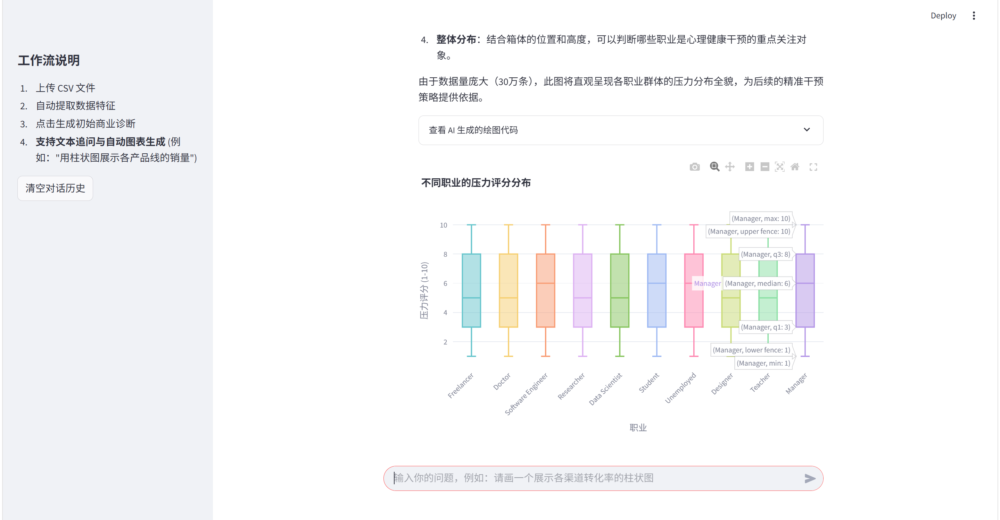
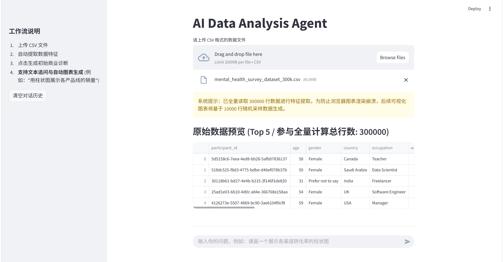
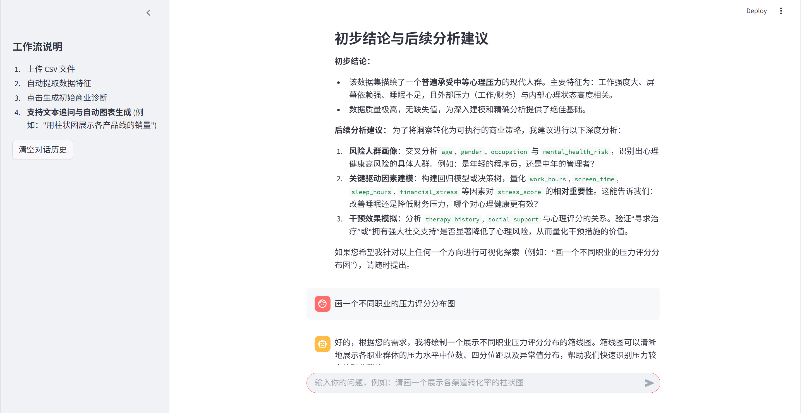

01 / Featured Project · AI Application × Data Analytics
AI Data
Analysis Agent.
把数据探索、AI 分析报告与自然语言图表生成连接起来，让 CSV 数据分析变成更加直观的交互流程。

01 / The problem
为什么做这个项目？
日常数据探索通常涉及读取文件、查看字段、生成描述统计，再将发现转化为图表。对于不熟悉数据分析工具的使用者，这套流程有一定的操作门槛。
这个项目尝试用自然语言交互串联常见数据分析环节，让使用者能够更快速地了解数据特征，并提出后续分析问题。
02 / How it works
从原始 CSV 到分析结果
应用使用 Streamlit 构建交互界面，Pandas 负责读取 CSV 与统计摘要，再调用 DeepSeek API 生成分析文本和绘图代码，最后由 Plotly 在界面中呈现交互式可视化结果。
01 / INPUTCSV 上传
数据预览
数据预览
02 / EXPLORE字段识别
统计摘要
统计摘要
03 / REASONAI 分析
自然语言追问
自然语言追问
04 / OUTPUTPlotly 图表
分析展示
分析展示
项目对较大数据集采用采样绘图策略，以控制图表渲染数据量；统计摘要与可视化样本应当区分理解。
03 / Actual screenshots
真实运行结果
以下截图直接来自项目的公开 GitHub 仓库。保留了原始程序界面、图表颜色和结果布局，以便更直观地判断它实际上做了什么。


04 / Boundaries & next steps
当前边界与后续迭代
这是已经公开源码的原型项目，不是面向不受信任用户开放的生产级在线服务。当前版本的模型生成分析及绘图结果仍需人工核查。
后续重点会放在代码执行隔离、会话状态管理、输入数据验证及结果可复现测试上。完成这些安全与质量工作后，再考虑开放在线 Demo。
目前提供真实运行截图和公开 GitHub 源码，暂不提供在线上传数据和执行 AI 生成代码的体验入口。